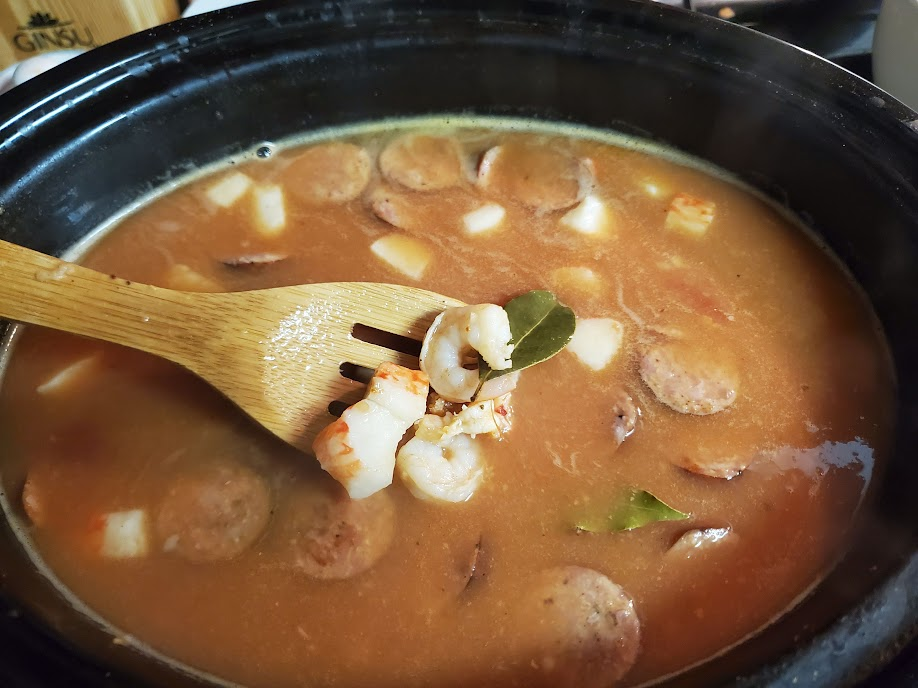
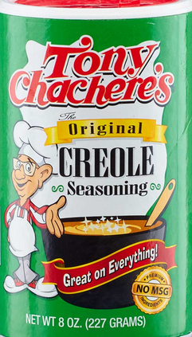

Mom's Bad Ass Red Beans and Rice!
So this is one of the recipes handed down from my mom that I only marginally changed. Basically I added shrimp and tons more cayenne pepper. Otherwise it's just as it was when I was little and needed the Best Comfort Food Ever.
All RecipesIngredients
- 1 pkg smoked sausage
- 1 lb small shrimp
- 1 lg can pinto beans
- 1 chopped onion (or 1 tsp onion powder)
- 2 garlic cloves (minced)
- 1/2 cup fresh or 2 tbsp dried thyme
- 1/2 cup fresh or 2 tbsp dried basil
- 1 large can of tomato sauce
- Add Tony's and cayenne pepper based on taste: I add 2 tbsp of each
- chicken broth
- rice

Instructions
- Cut sausage into 1/4" or less chunks and pan sear
- Drain the beans if using canned (I do to save time)
- Place all ingredients (except broth) in slow cooker or heavy pot (for stovetop)
- Use enough chicken broth to just cover everything
- Stovetop: Cover and cook over med-low heat for 45 min to one hour
- Slowcooker: Cook on high for 1 and a half hours
